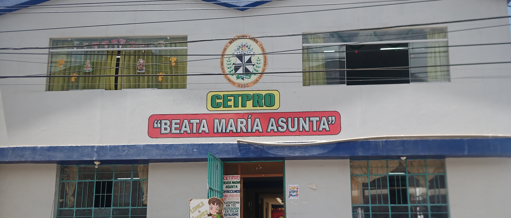
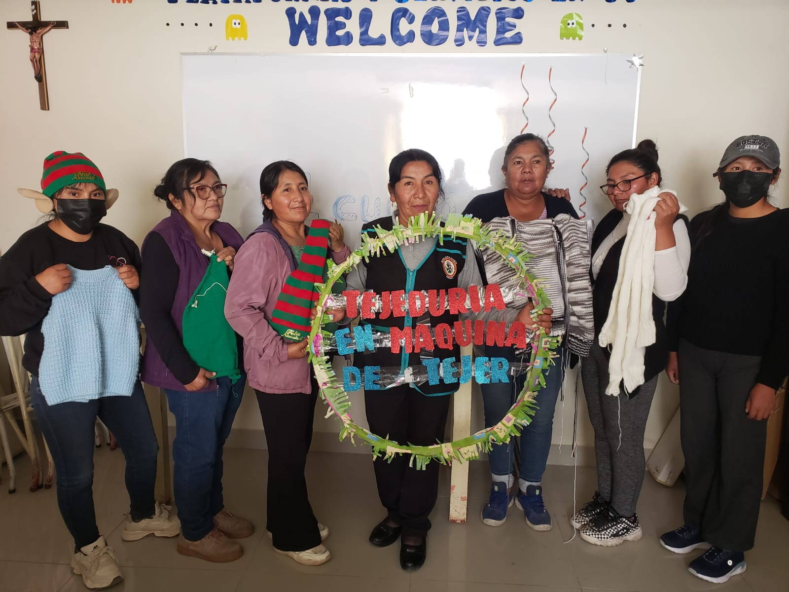
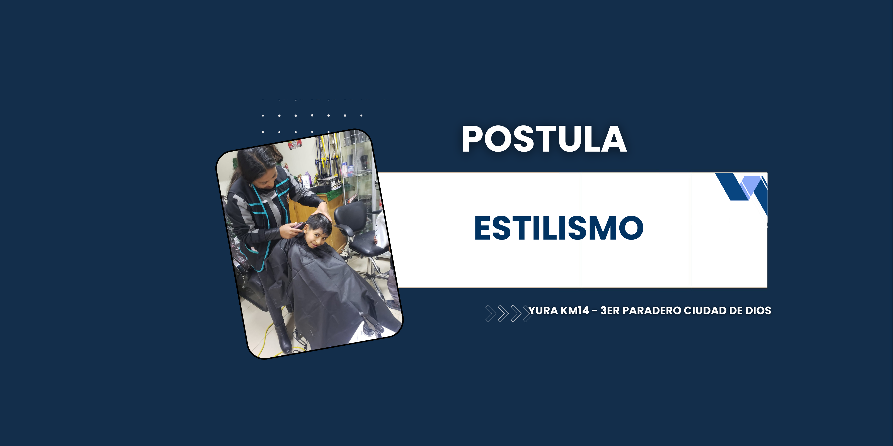
 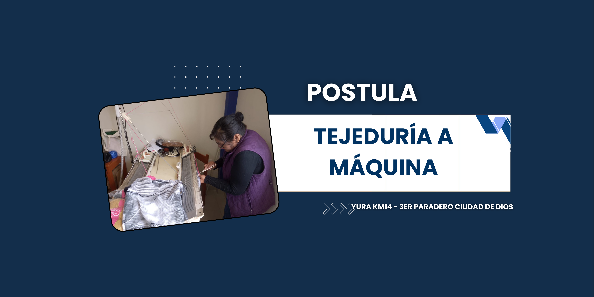
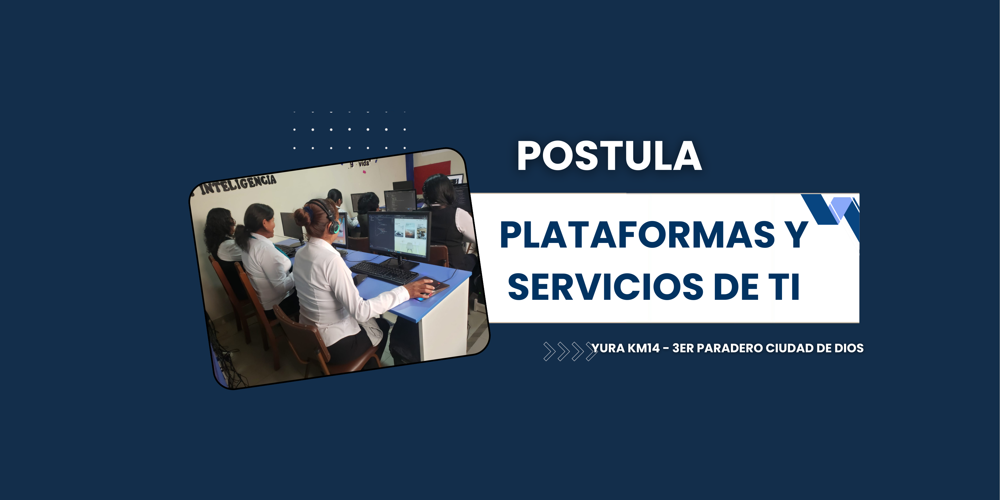
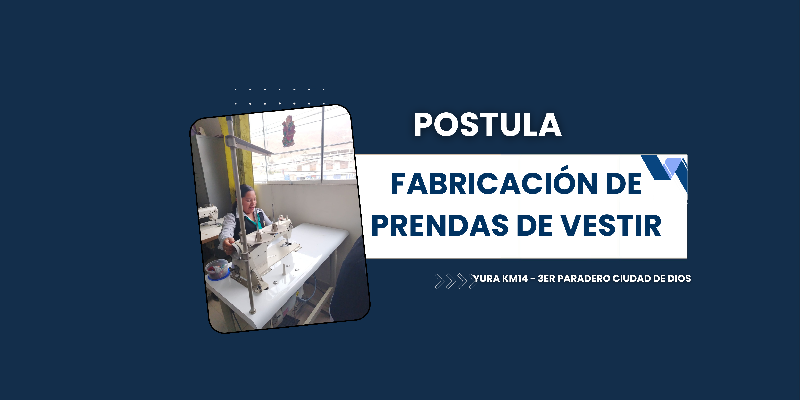
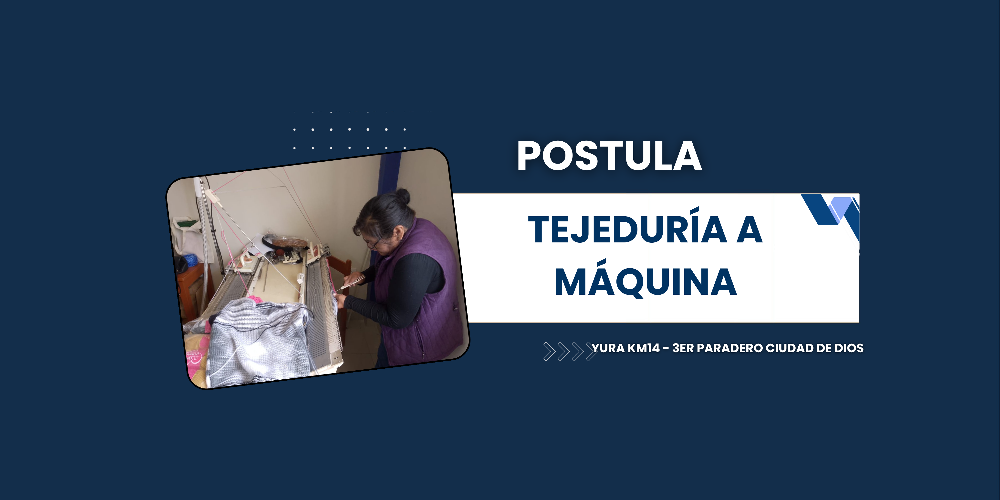
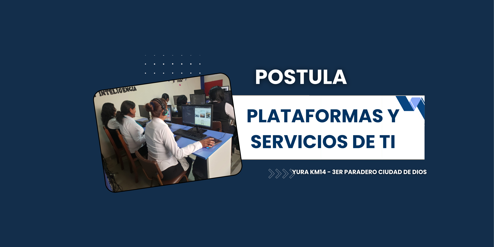
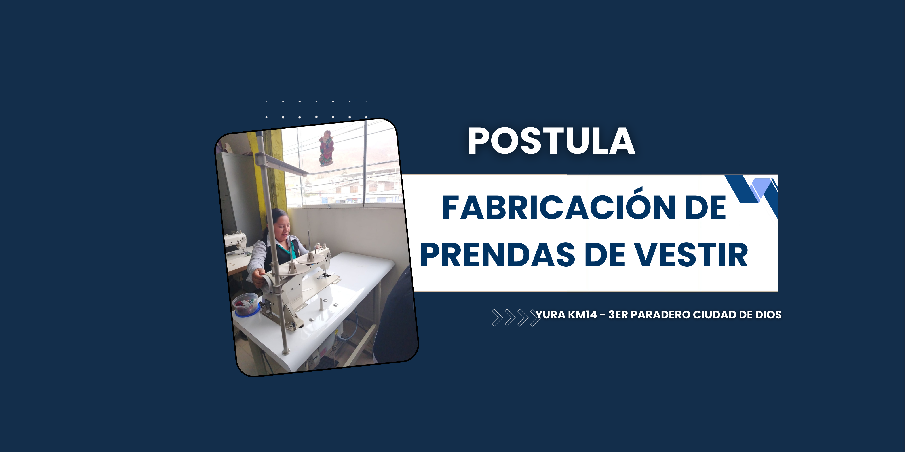
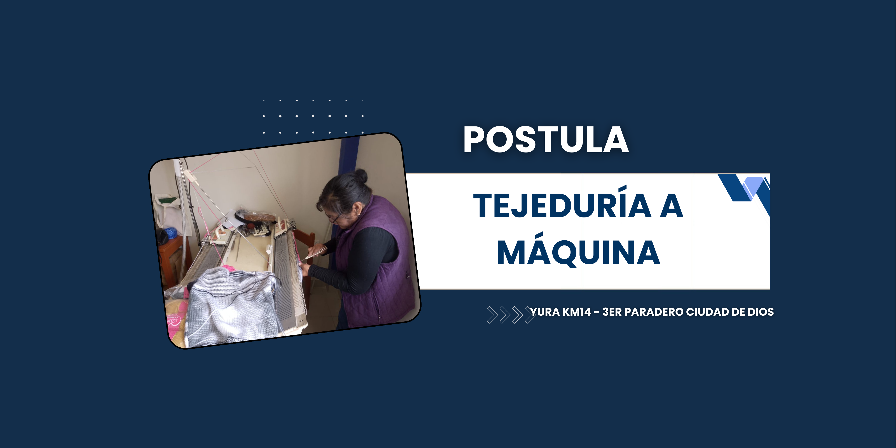
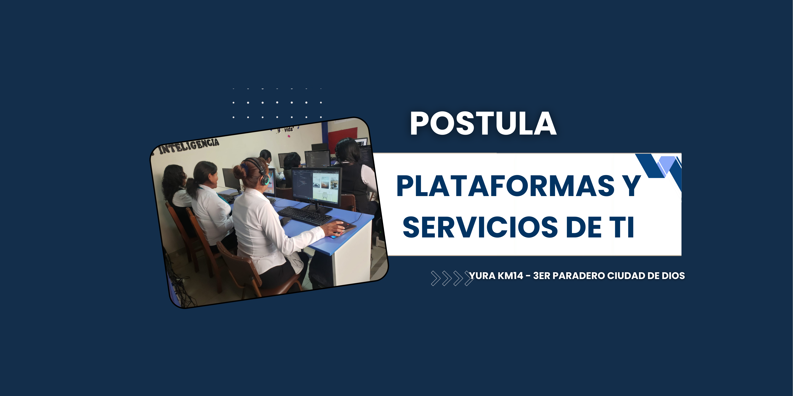
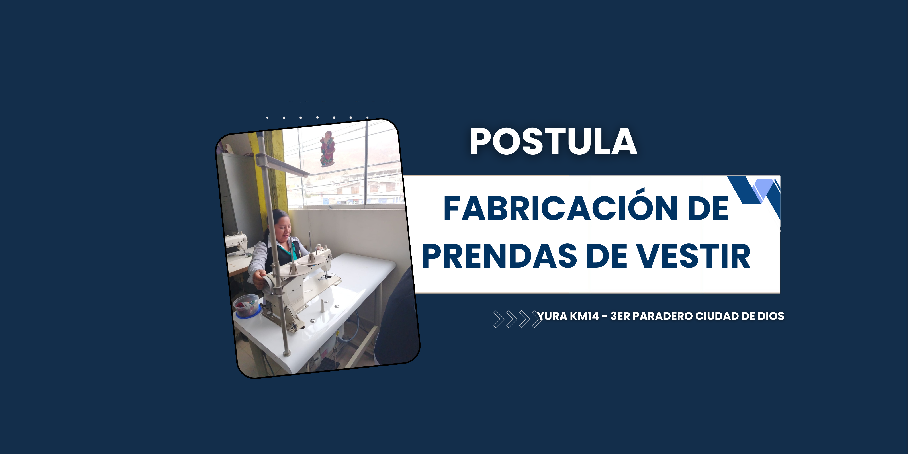
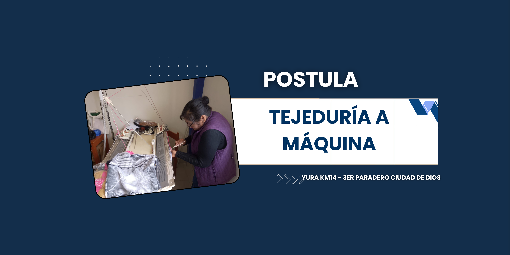
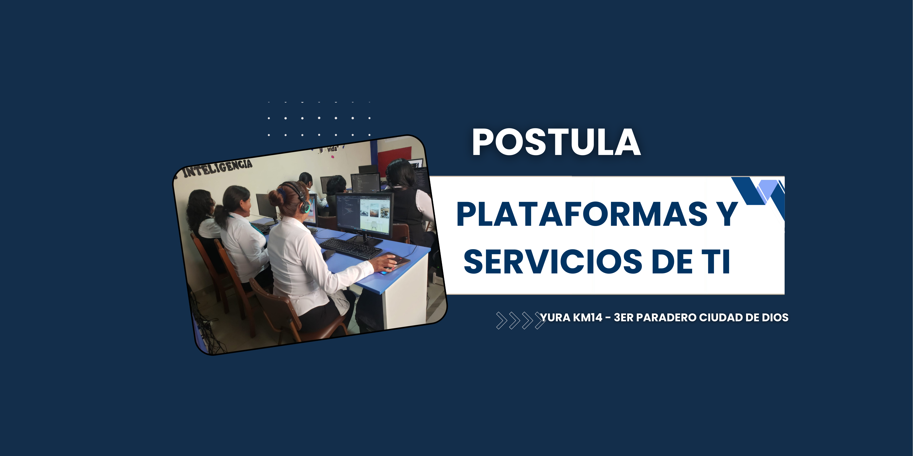
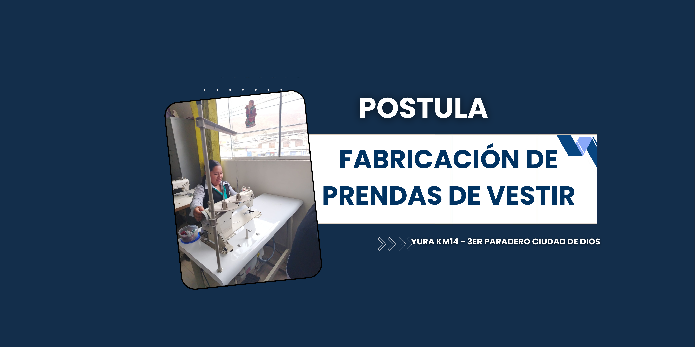
¿Estás listo para impulsar tu futuro profesional en solo 2 años? Te invitamos a formar parte de nuestras carreras técnicas diseñadas para brindarte habilidades prácticas y oportunidades en el mundo laboral.
El CETPRO Beata María Asunta, ofrece los programas técnicos de: tejido
en telar, plataformas y servicios, tecnologías de la información - TI,
fabricación de prendas de vestir y estilismo, las cuales tienen gran
demanda en el mercado laboral. Las clases se impartirán tres días a la
semana en las tardes. Según informó la hermana Marleny Echeverri
Escobar, las matrículas iniciarían en el mes de julio, después que
culmine la mudanza de las máquinas industriales, y equipos. El Cetpro
funciona actualmente en el distrito de Huanca (Caylloma) cuenta con 65
alumnos y tiene una antigüedad de 35 años, bajo la dirección de la
Congregación de Hermanas Dominicas de la Doctrina Cristiana.
Jóvenes desde los 14 años y adultos podrán realizar estudios técnicos
gratuitos en el distrito de Yura, tras el convenio interinstitucional
entre la Municipalidad Distrital de Yura, la Ugel Arequipa Norte y el
Centro de Educación Técnico-Productiva (CETPRO) Beata María Asunta. La
alcaldesa, Mirtha Ruelas Casillas señaló que se está cumpliendo el sueño
de muchas personas de tener estudiar gratuitamente, “Antes que se lleven
el Cetpro a otro distrito, pedí que lo traigan Yura, para que las
mamitas y todos los yureños tengan la oportunidad de estudiar y
conseguir un empleo o poner su propio negocio”, recalcó. Para el
funcionamiento del Cetpro, la comuna distrital habilitará los ambientes
del ex Centro Cultural de Ciudad de Dios para que se conviertan en aulas
de clases y la Ugel Arequipa Norte se encargará de la contratación y
pago de los docentes.
“Al 2026 somos una Institución Educativa que promueve una educación integral en los valores Humanos y cristianos. Queremos ser una institución Técnico productiva líder en sus nuevos programas de estudio, que brinde una educación de calidad al alcance de todos. Contando con personal capacitado y competente, garantizando la formación Técnica y el empoderamiento de los estudiantes a través de la innovación, y el desarrollo de habilidades y capacidades para responder a las necesidades del mundo laboral”
“Somos un Centro de Educación Técnico Productiva en convenio, que promueve los valores humanos y cristianos, la formación integral y sólida de los estudiantes como seres críticos, emprendedores y innovadores que responden positivamente a los retos y cambios de la sociedad y se les facilita la inserción laboral, enmarcados en la práctica de la trilogía y axiología institucional: “Verdad, Excelencia y Trabajo”